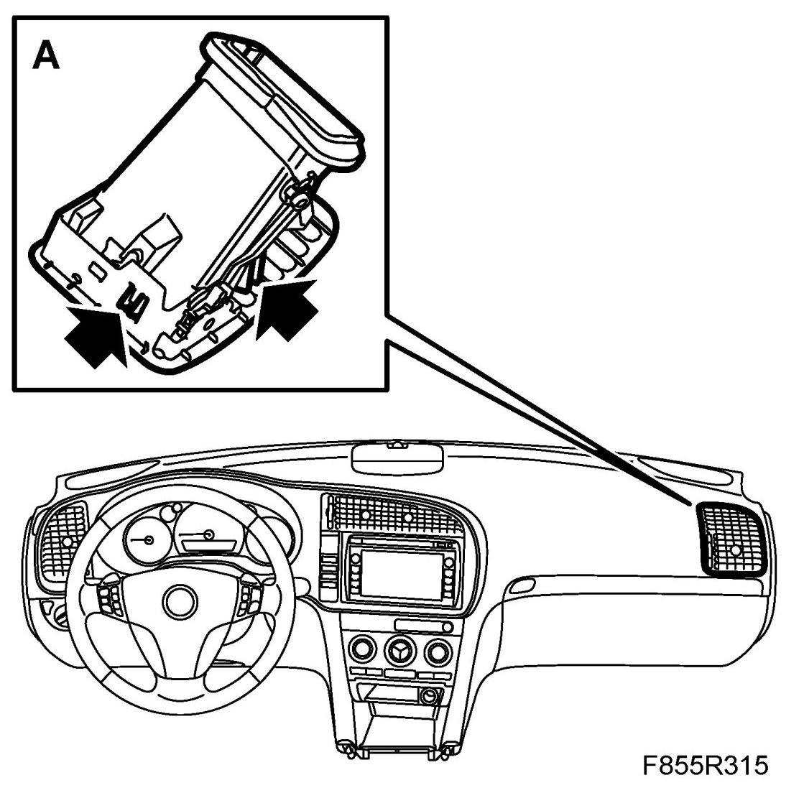
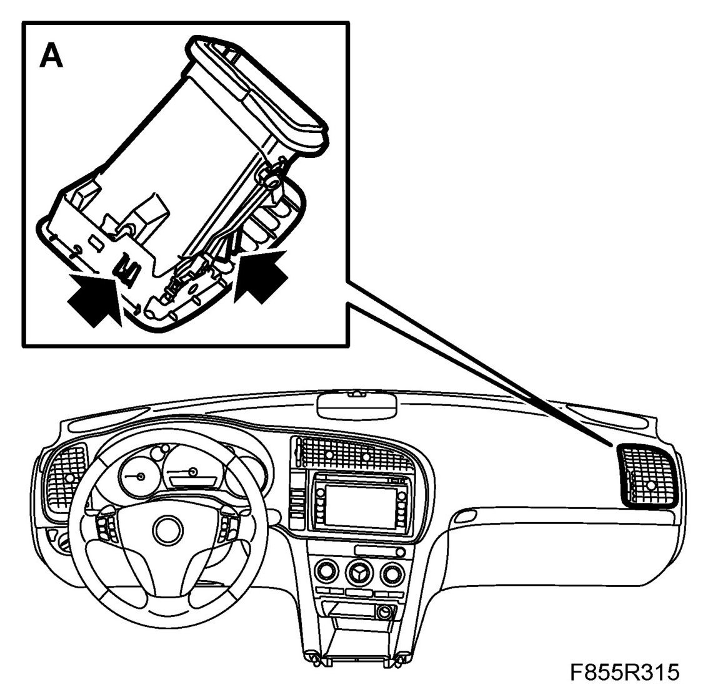

Air Vent, Panel, Passenger
Air Vent, Panel, Passenger
To remove
1. Remove the glove box.
2. Start by undoing the locking tabs (A) on the inside of the panel vent, then the underside and finally the arched side. Carefully lift out the panel vent using 82 93 474 Removal tool.

To fit
1. Position the panel vent. Ensure that the side defroster air channel is correctly located.
2. Clip in the panel vent. Make sure that the locking lugs (A) are properly engaged.

3. Refit the glove box.